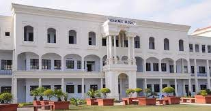

Highlights About COER
College of Engineering Roorkee
Established in 1998, It is affiliated to UTU, Dehradun and approved by AICTE & MHRD, Govt of India.
COER Educational Institution are known for Disciplines, which is an 'obligation to excellence and impart education based on latest knowledge, analytical skills, management competence through advanced methods of Training, Research and Strong Institute-Industry interface. To impart technical education in Engineering and Management with training, skill upgradation and research in futuristic technologies and niche areas is our motive. COER believes in the all-round development of its students and therefore leaves no stone unturned to ensure this. faculty, nurturing a healthy learning environment and running rigorous personality development programs for placement. To impart technical education in Engineering and Management with training, skill upgradation and research in futuristic technologies and niche areas is our motive. Excellence in teaching and molding the students for their all round development have remained a hallmark of COER.
COER will provide a world-class global educational experience to every student who comes to it. It will become one among the top 10 research institutions of India, providing technical education with advancement to impact the society at large. And it will attract and sustain a cadre of faculty, who is committed to leadership, honesty, excellence and service to the mankind, with a distinct work culture and vibrant-environment.